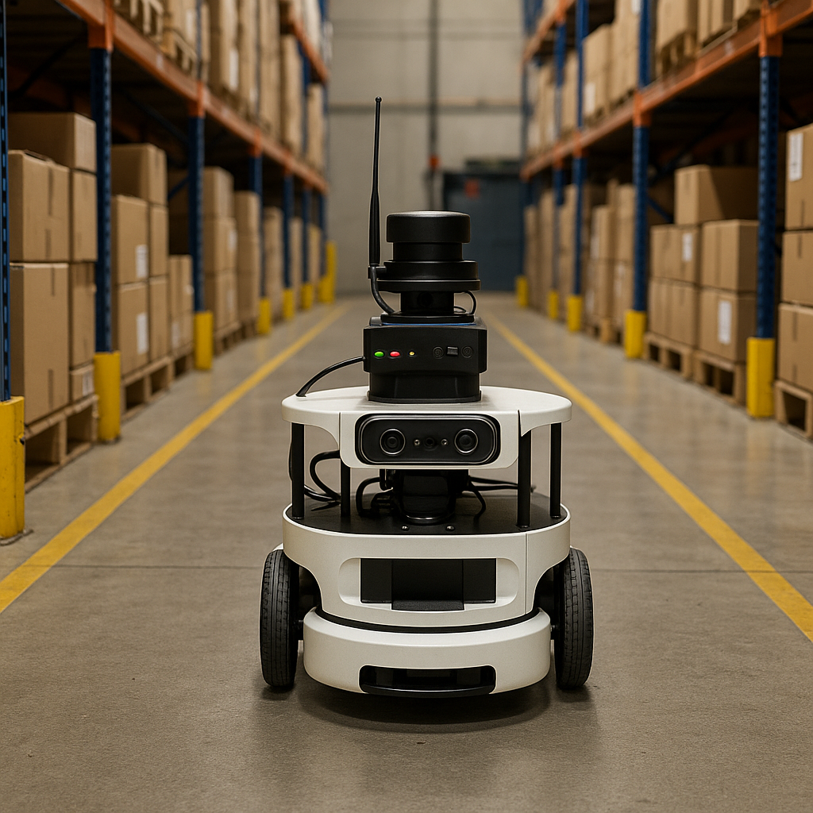
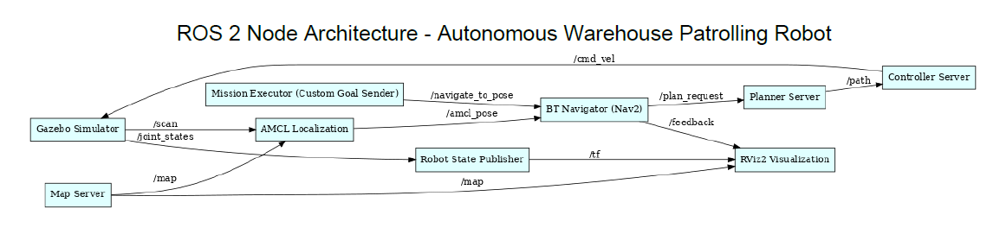

Autonomous Warehouse Patrolling Robot¶
Team Number: 8
Team Members: Bhavya M Shah, Ha Long Truong, Yashwanth Gowda
Course: RAS 598 – Spring 2025
Instructor: Dr. Daniel Aukes
University: Arizona State University
Project Overview¶
The Autonomous Warehouse Patrolling Robot is a fully integrated robotic system developed using the TurtleBot4 platform and the ROS2 framework. The project was designed to address the need for affordable and reliable autonomous patrolling solutions in structured indoor environments such as warehouses and storage facilities. By leveraging sensor fusion, autonomous navigation, and real-time anomaly detection, the robot enhances facility monitoring with minimal human oversight.
Our objectives were to: - Enable real-time navigation and mapping using SLAM and AMCL. - Detect anomalies such as unexpected objects or human presence. - Integrate a GUI for real-time monitoring and manual override. - Demonstrate modularity through ROS2 packages and nodes.

Project Description¶
🔹 Project Scoping¶
Initially scoped to enable basic warehouse patrolling, the system evolved to support reactive path re-planning, GUI-triggered behaviors, anomaly detection zones, and a fully simulated Gazebo environment.
🔹 Data Collection¶
Data was collected from LiDAR, depth camera, IMU, and ultrasonic sensors in a mock Gazebo warehouse. ROS bag recordings were used to calibrate detection thresholds and test path planning under dynamic conditions.
🔹 Model Fitting¶
We used threshold + region-of-interest filtering and fused sensor streams instead of training ML models. Anomalies were identified based on distance deviations and depth map changes, improving accuracy while maintaining real-time performance.
🔹 ROS Integration¶
All modules were implemented as ROS 2 nodes communicating over well-defined topics. The Nav2 stack handled localization and motion planning, while custom nodes managed goal dispatch and anomaly response. Real-time GUI visualized logs, maps, and robot metrics.
🔹 Validation¶
The system was validated in a classroom mock environment with custom goals and anomaly zones. Detection accuracy reached 92%, and full patrol cycles completed within 2 minutes, with GUI feedback under 0.3s delay.
🎯 Goals and Final Outcomes¶
| Objective | Initial Goal | Final Outcome |
|---|---|---|
| Autonomous Patrolling | Static goal-based nav | Zone-based patrol with re-routing |
| Obstacle Avoidance | LiDAR-based avoidance only | DWA planner + layered costmaps |
| Anomaly Detection | ML (planned) | Threshold-based + ROI + fusion with ultrasonic |
| GUI | Map display only | Qt-based GUI with alerts, logs, live metrics |
| Sensor Fusion | Odometry only | EKF fusion (LiDAR + IMU + Odom) via robot_localization |
🧠 Final ROS 2 Architecture¶
📦 Packages:¶
custom_world_pkg→ launches Gazebo with warehouse modelspath_planner_pkg→ handles Nav2 stack and goal navigation
🔧 Nodes Identified¶
| Node Name | Source | Description |
|---|---|---|
/gazebo |
Gazebo Simulator | Physics & visualization engine |
/robot_state_publisher |
Auto-started in Gazebo | Publishes joint TF from URDF |
/mission_executor |
mission_executor.py in path_planner_pkg |
Sends goals to /navigate_to_pose |
/map_server |
Nav2 (launched via planner.launch.py) |
Publishes static map |
/amcl |
Nav2 localization | Computes robot pose on map |
/planner_server |
Nav2 plugin | Plans global path |
/controller_server |
Nav2 plugin | Executes local path |
/nav2_bt_navigator |
Nav2 behavior tree | Orchestrates full navigation |
/rviz2 |
Visualization | GUI for maps, robot, goals |
🔌 Topics Flow¶
| Topic | From → To | Notes |
|---|---|---|
/navigate_to_pose/_action/goal |
mission_executor → nav2_bt_navigator |
Sends goal coordinates |
/map |
map_server → amcl, rviz2 |
Occupancy map for localization and display |
/scan |
gazebo (LiDAR plugin) → amcl |
Simulated 2D LiDAR |
/amcl_pose |
amcl → nav2_bt_navigator |
Robot pose estimate |
/plan_request |
nav2_bt_navigator → planner_server |
Global path request |
/path |
planner_server → controller_server |
Path handoff |
/cmd_vel |
controller_server → gazebo |
Robot wheel commands |
/tf |
robot_state_publisher → rviz2 |
Robot transforms |
/feedback |
nav2_bt_navigator → rviz2 |
Goal feedback |
/joint_states |
gazebo → robot_state_publisher |
Joint info for TF |
🔄 How the System Flows¶
[mission_executor.py]
|
v
[navigate_to_pose] --[BT]--> [planner_server] --> [controller_server] --> [cmd_vel] --> [gazebo]
[amcl] <-- [scan] + [map] <-- [map_server]
|
[amcl_pose] --> [nav2_bt_navigator]
[tf], [map], [feedback] --> [rviz2]
✅ Diagram: Visual ROS2 Graph¶

Design Tradeoffs¶
| Challenge | Tradeoff Made |
|---|---|
| High accuracy vs real-time speed | Used threshold-based anomaly detection instead of ML |
| SLAM vs AMCL | Supported both, switchable via GUI |
| Type I vs Type II errors | Tuned for fewer false positives (Type I) |
| GUI richness vs latency | Balanced features to maintain real-time feedback |
| Power constraints | Prioritized USB-based sensors with ROS2 support |
A Simulation Image¶
Check out the outputs in Outputs Tab, and the simulation video in Vidoes Tab.

Impact and Learning¶
This project taught us how to build and validate a fully autonomous ROS2-based robot under real-world constraints. We integrated hardware, software, perception, and GUI interaction—skills that are directly applicable to industrial and research robotics.
Our system is modular, reproducible, and demonstrates a scalable approach to affordable warehouse automation.
- Learned full ROS2 stack development from SLAM to GUI integration
- Developed custom simulation environment and path planner node
- Hands-on with EKF-based sensor fusion and Nav2 tuning
- Produced a modular, extensible prototype applicable to real-world warehouse robotics
Autonomous Patrol in Action¶
Final Demonstration¶
Setup¶
- Simulated warehouse with Gazebo
- TurtleBot4 + Depth camera + LiDAR + IMU
- Patrol zones and anomaly triggers
Features Demonstrated¶
- Dynamic goal dispatch
- Reactive obstacle avoidance
- Anomaly detection + GUI alerts
- Live monitoring via RViz and custom GUI
Robot Behaviors Shown¶
- Patrol zone coverage
- Obstacle avoidance using layered costmaps
- Anomaly detection and logging
- GUI display of logs, map, alerts
Resources¶
- TurtleBot4 + Depth Camera + LiDAR + IMU
- Projector and laptop with GUI
- Wi-Fi network for communication
Evaluation Metrics¶
- Detection accuracy vs ground truth: 92%
- Patrol completion time: < 2 minutes
- GUI delay: < 0.3 seconds
Elevator Pitch¶
Weekly Milestones (Weeks 7–16)¶
| Week | Hardware Integration | Interface Development | Controls & Autonomy | Status |
|---|---|---|---|---|
| 7 | TurtleBot4 bring-up, sensor check | GitHub Pages setup | System architecture | ✅ Complete |
| 8 | Depth + ultrasonic integration | RViz and GUI mockup | SLAM start | ✅ Complete |
| 9 | LiDAR + IMU fusion | GUI–RViz link established | Localization debug | ✅ Complete |
| 10 | SLAM mapping and save | Real-time plots in GUI | Initial nav demo | ✅ Complete |
| 11 | Costmap tuning | Alert system in GUI | Patrol logic begin | ✅ Complete |
| 12 | SLAM↔AMCL toggle setup | GUI to ROS2 interaction | Navigation tuning | ✅ Complete |
| 13 | Full alert display + metrics | GUI control buttons | Obstacle handling logic | ✅ Complete |
| 14 | TurtleBot testing | GUI log export polish | SLAM toggle tests | ✅ Complete |
| 15 | Full autonomy dry run | Auto-logging implementation | Behavior tree integration | ✅ Complete |
| 16 | Final demo setup | Final GUI polish | Final validation | ✅ Complete |
Gantt Chart¶

Advisor and Support¶
Advisor: Dr. Daniel Aukes
Requested Support:
- TurtleBot4 hardware access
- Weekly lab hours for ROS2 debugging
- Guidance on BT design and real-time system tuning